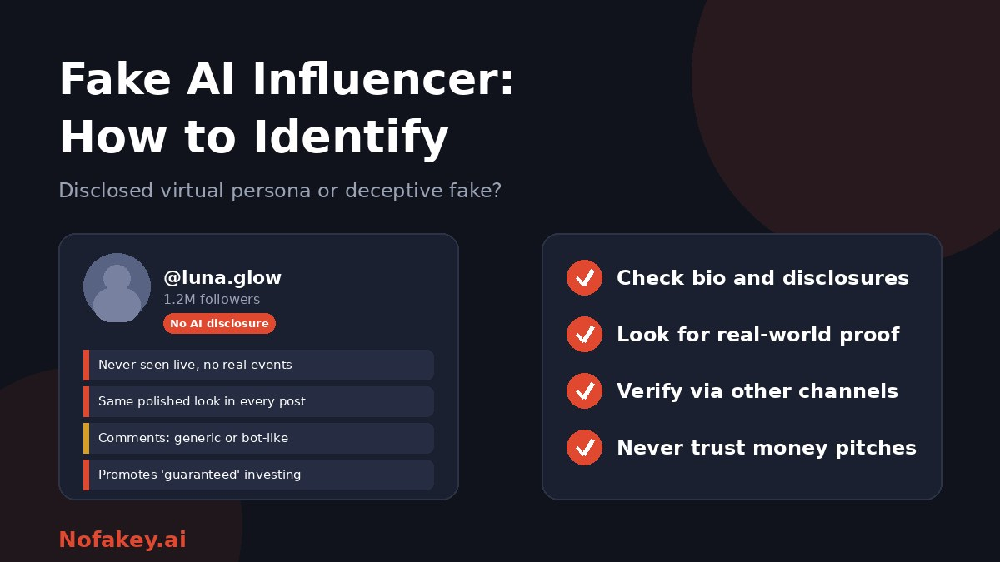

The influencer in your feed has flawless skin, never has a bad day and answers every comment instantly. Are they a person, a brand-owned character, or a scam account wearing a synthetic face? "Fake AI influencer" means different things depending on who you ask, and the risks differ too. This guide separates them, shows how to identify each, and explains how to protect your money and trust.
Four things people mean by "fake AI influencer"
| Type | What it is | Main risk |
|---|---|---|
| Disclosed virtual influencer | An openly computer-generated or AI-driven character, often owned by a brand or studio | Low, if clearly labeled. Some audiences feel misled by undisclosed endorsements |
| Undisclosed AI persona | A synthetic "person" presented as real, with a made-up life story | Deception, fake testimonials, emotional manipulation |
| Impersonation of a real creator | A cloned face or voice of a real person used to promote products or scams | Fraud, and damage to the real creator's reputation |
| Fake influence | Real or fake accounts with bought followers, bots or inflated engagement | Brands waste money, audiences are misled |
A related meaning is the "AI guru" who claims expertise in AI to sell courses or tools. That is a credibility problem, covered briefly below.
Not every AI influencer is a scam
Virtual characters have been used openly in advertising and entertainment for years, and some creators use AI tools to make content. The problem is not the technology but deception: hiding that a persona is synthetic when it matters, inventing a personal story to build trust, or using the persona to sell something harmful. Keep that distinction in mind as you read the signs.
Red flags that an account may be an AI persona
No single sign is proof. Look for several together.
| Sign | What it looks like | Why it can mislead |
|---|---|---|
| No disclosure | No "virtual," "AI" or "character" in the bio, name or posts, even though the account behaves like a brand character | Some real creators simply do not mention how they make content |
| No real-world proof | Never seen live or at events, no candid footage, no appearances with verifiable people | Private people may avoid showing their lives |
| Too-perfect consistency | Same look, lighting, angles and expressions across all posts | Heavy editing and filters do this too |
| Visual oddities | Odd hands, jewellery, text or backgrounds, and an unnaturally smooth face | Tools keep improving, so a clean image proves nothing |
| Thin history | New account, sudden growth, or an unclear origin story | New creators grow fast sometimes |
| Generic comments | Replies that are vague, repetitive or oddly instant | Many busy creators use scheduling or assistants |
| Uniform engagement | Comments full of emojis and similar praise, with few real conversations | Engagement pods and bots exist for human creators too |
| Money pushes | Investments, trading signals, "guaranteed" returns, paid groups or giveaways that need a fee | This is the most important flag, whoever is behind it |
How to verify an influencer, step by step
- Read the bio and pinned posts. Look for any disclosure that the account is virtual or uses AI.
- Check for real-world proof. Is there live video, event photos taken by others, or interactions with real people that can be confirmed?
- Search for the name and photos. Do the images appear on other accounts under different names? A reverse image search can help. See how journalists verify images.
- Look for presence beyond one platform. Real creators often have a website, interviews, press mentions or a following that links back.
- Check the account's history. Review earlier posts, name changes, growth patterns and past partnerships.
- Test interaction. Ask a simple, specific question and see whether the reply is natural, contextual and consistent over time. This is a clue, not proof.
- Look at who is behind it. A company, a studio or a named creator? Unclear ownership combined with sales pitches is a bad sign.
- Verify through a second channel before you send money or share data. See how to verify a person on a video call is real.
When a real creator is cloned
Scammers can use a real creator's face and voice in AI-made clips to promote fake products, giveaways or investment schemes. The creator may never have seen the clip. Warning signs include:
- A creator suddenly promoting something out of character, especially money-making schemes.
- A link in the caption or a request to message a different account.
- An account with a slightly different handle, or a copied profile.
- Audio and lip movement that do not quite match, though a good fake may show no flaws.
Check the creator's official, verified accounts and website before believing an endorsement. Our guide to what a deepfake is and how to protect yourself covers the basics, and the same relationship traps appear in the deepfake romance scam guide.
If you are a creator being impersonated
- Publish your official channels in one place and link to it from every profile, so fans can check.
- Save evidence: screenshots, links, usernames and dates.
- Report the account and posts using the platform's impersonation and synthetic media tools.
- Tell your audience clearly which accounts are not yours and that you will never ask for money or private details.
- Consider legal advice about image and voice rights where the impersonation is serious. Rules differ by country.
For brands: vet influencers before you pay
- Confirm identity directly. Hold a live video call, ask for references and check contracts and payment details.
- Review audience quality. Look for sudden follower jumps, uniform generic comments and audience locations that do not match the creator's claims.
- Check past collaborations. Do the brands confirm them?
- Require disclosure. Put AI and virtual-persona rules, and any ad or sponsorship labeling, in the contract.
- Be careful with AI-created endorsements. Do not publish content that makes a real person say something they did not agree to.
- Plan for impersonation. See brand protection against deepfake impersonation for a response runbook.
Also watch for reviews and testimonials that look automated. See how AI fake review detectors work.
What about fake "AI gurus"?
Some accounts present themselves as AI experts and sell courses, tools or "systems." Signs of a credibility problem include vague expertise, income claims with no evidence, pressure to buy quickly, copied content and a lack of real work you can inspect. Look at what they have built, who vouches for them, and whether their claims can be checked.
Can a detector tell you?
Some tools claim to flag AI-generated images, text or accounts. Treat them as one signal, since results can be wrong in both directions. Platforms also struggle to identify synthetic accounts at scale. Read are AI detectors accurate? for the limits. If a profile link, offer or message looks suspicious, paste it into our free checker for a quick first read.
If you are creating an AI influencer yourself
- Be open that the persona is virtual in the bio and in sponsored posts.
- Follow platform rules on AI labels and paid-partnership disclosure.
- Do not invent experiences a synthetic character cannot have, such as product use or testimonials.
- Do not clone real people without their permission.
- Use clear labels. See how to label AI-generated content.
Conclusion
You cannot reliably tell a fake AI influencer from the picture alone. Look for disclosure, real-world proof, independent verification and any push to hand over money or data. Treat disclosed virtual characters differently from deceptive ones, and be especially careful about cloned real creators. Brands should vet identity directly and write disclosure into contracts. Find more guides on the Nofakey.ai blog.
Frequently asked questions
What is an AI influencer?
An AI or virtual influencer is a computer-generated or AI-driven persona that posts like a creator. Some are openly disclosed as virtual characters, while others pose as real people without saying so.
How can I tell if an influencer is AI-generated?
Look for missing real-world proof, such as live appearances or interactions with real people, check the bio for disclosures, notice unnaturally uniform posts and generic comments, and verify the account through other channels. Visual clues alone are unreliable.
Is every AI influencer a scam?
No. Many virtual influencers are openly disclosed and used for marketing or entertainment. The problem is deception: passing off a synthetic persona as a real person, or using one to push scams or false endorsements.
What is the risk of AI influencers impersonating real creators?
Scammers can clone a real creator’s face or voice to promote fake products, giveaways or investment schemes. Fans may trust the endorsement and lose money.
How should brands vet influencers for authenticity?
Verify identity through direct contact, review audience quality and engagement patterns, check past partnerships, require disclosure of AI or virtual status in contracts, and use video calls and references.
Got a suspicious profile, link or offer to check?
Run it through the checker